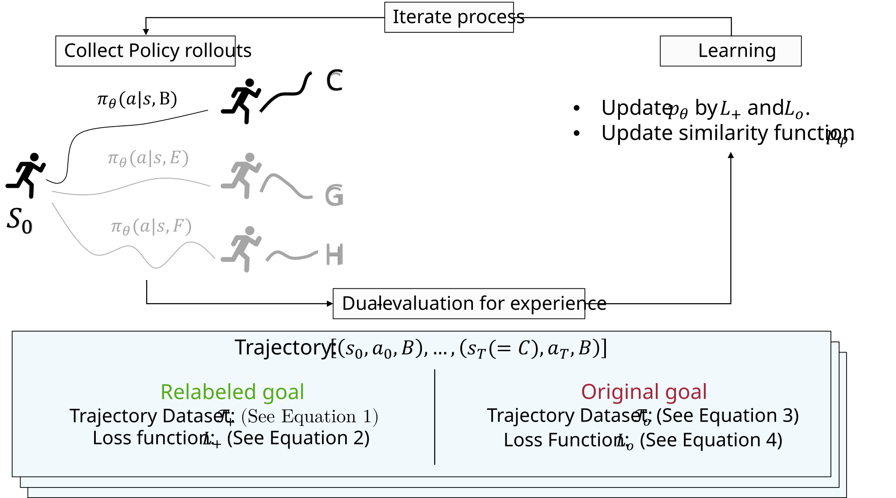
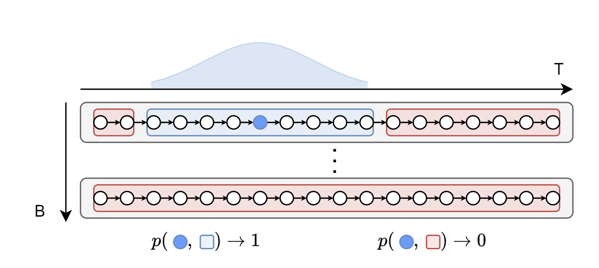

Learning from reward functions and imitation learning of demonstrations are the two principal approaches for training autonomous systems that interact with an environment through action and observation. Both, however, require human specification for each behaviour to be acquired, a problem for long-lived self-adaptive systems whose goals and operating conditions cannot be fully anticipated at design time. Recently, Goal-Conditioned Supervised Learning (GCSL) through self-imitation has been proposed as a self-supervised alternative: by strategically relabelling goals, agents can derive policy insights from their own experiences. Despite its successes, this framework presents two notable limitations: (1) learning exclusively from self-generated experiences can exacerbate the agents' inherent biases; (2) the relabelling strategy allows agents to focus solely on successful outcomes, precluding them from learning from their mistakes. To address these issues, we propose GCSL with Negative Feedback (GCSL-NF), which evaluates each trajectory twice: positively with respect to relabelled goals, and correctively with respect to the goal originally intended. The corrective target comes from a similarity function learned contrastively from trajectory-induced neighbourhood relations, so that neither a reward function nor a geometric distance needs to be specified. Our experiments show that GCSL-NF overcomes limitations imposed by agents' initial biases, increasingly benefits from negative feedback as learning progresses, and matches or surpasses GCSL- and HER-based methods. By reducing reliance on prespecified reward functions, the proposed approach is particularly relevant for self-adaptive autonomous systems, where adaptation objectives may be diverse, changing, or difficult to engineer.
Method
GCSL relabels each trajectory with goals that it actually reached and imitates the recorded actions. A trajectory that misses its intended goal is therefore used only as a demonstration for other goals, and the failure itself provides no learning signal. If the initial policy is biased, the agent keeps reinforcing its own behaviour.
GCSL-NF evaluates every trajectory twice. The relabelled goals provide positive targets, as in GCSL (loss L+). The originally intended goal g provides a corrective target: the similarity pφ(sT, g) between the final state of the trajectory and that goal. The original-goal loss is a binary cross-entropy towards this target, discounted by the number of remaining steps:
The policy minimizes L+ + Lo, so learning stays fully supervised and no reward function is involved.

Figure 1. Overview of GCSL-NF. The agent samples trajectories, evaluates them with both relabelled goals and original goals, and updates the policy and the similarity function.
Trajectory-induced similarity
The distance between two states depends on the environment's dynamics, which are unknown in advance. The similarity function pφ is therefore learned contrastively from the replay buffer. For a reference state, states within a temporal neighbourhood of the same trajectory are positive samples; states outside this neighbourhood and states from other trajectories are negative samples. No distance metric in observation space is needed, which matters when observations such as LiDAR scans do not reflect physical distance.

Figure 2. Learning pφ from trajectories. Rows are trajectories and columns are time steps. The blue region contains positive samples drawn from a unimodal distribution around the reference state; red regions contain negative samples.
Results
We evaluate GCSL-NF on five discrete-action goal-reaching tasks against GCSL, W-GCSL, HER with DQN and A2C, and Contrastive GCRL. In LiDAR navigation the agent observes range readings, so distances in observation space do not reflect physical distances. In object pushing the arm has to reach the puck before it can push it to the goal.
Figure 3. Environments. Red points indicate the agent position and green stars the goal.Figure 4. Distance to the goal during training on the discrete-action tasks. Mean over 5 seeds; shaded areas show one standard deviation.
GCSL-NF matches or outperforms the baselines on the tested tasks, with the largest gain on object pushing. In continuous control (Car Racing, Fetch Reach and Fetch Push) it is competitive with the baselines and reaches the lowest final distance on Fetch Push.
{% include projects/gcsl_tables.html lang="en" %}
Robustness
We pre-train the policy towards a fixed action before learning starts. GCSL-NF and Contrastive GCRL recover almost to unbiased performance, while GCSL, W-GCSL and HER DQN do not. When the goal distribution moves to the opposite room in the four-room environment, without resetting the policy or the replay buffer, GCSL-NF reaches the lowest distance both before and after the change and returns to its earlier level. The original-goal loss gives an explicit negative signal to every trajectory that misses the requested goal, which breaks the self-reinforcement of relabelling.
Figure 5. Recovery from a corrupted prior (a, b; Point Mass Navigation) and from a runtime goal change at 20k episodes (c; 2D 4-Room Navigation). Mean over 5 seeds; shaded areas show one standard deviation.
Under sensor noise in LiDAR navigation, GCSL-NF degrades gracefully while GCSL and W-GCSL fail as the noise grows; actuation noise is harder for all methods. With action-level clamping and positive-relabel filtering, the original-goal loss also lets the agent keep a danger-zone constraint and a history-dependent waypoint rule that were enforced only during training.